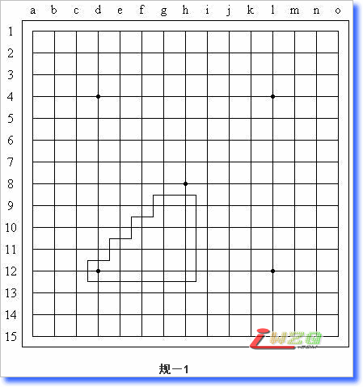

“新春”杯规则分析
#1 “新春”杯规则分析 作者：有志青年 发表时间：2008-1-29 10:02:19
昨天晚上简单想了一下，觉得还是挺复杂的……因为我这儿没什么统计数据，只能简单说说了。
1、平衡性
平衡性分为两个部分：平衡本质和平衡策略。
平衡本质基本没法说，因为我没有数据（理论探究不很困难，但工作量和工作时间都是难以想象的），但我可以相对RIF规则来评论一下：两个规则的区别在于开局点的位置，在新规则下开局点由“假白方”（姑且让我这么叫）选择，因此这个规则相对于RIF规则对白棋是占优的，注意我说的是相对。
平衡策略，感觉上应该是存在的，也就是说，双方可以找到一种策略，通过比较双方的真实水平来决定胜负，当然这个水平是指这个规则框架之下的水平，目前我们还没有一个直观的想法——但是其大部分内容与RIF规则下的“水平”本质是一样的：进攻、防守、做棋、抓禁……区别在于对盘端的把握、对局面形势的评判与拓展方式等等。事实上，RIF规则下存在平衡局面和新规则下的平衡局面不一定等同，还是要看开局点的位置。一些开局点明显存在黑必胜的棋型和白必胜的棋型，因此在上百种开局的微妙演变中（为什么是上百种，下面会提到）我很难想象竟然不存在一个平衡开局。具体有没有，我还是相信理论。
2、赛前准备
赛前准备也可分为两个部分：主观赛前准备和客观赛前准备。
令人欣喜的是，主观赛前准备的重要性被大幅度削弱了，虽然我不知道这种削弱是有利还是不利（我个人认为，只要不很过分，就是有利的，但现在削弱的程度非常过分）……我只需要列出几个数据就能让大家清楚地看到这个表面繁荣之下的巨大缺点：在RIF规则下，原则上，“假黑方”至少只需要准备多少个局面？1个！“假白方”需要准备的局面数目是26个。我们来看看新规则：“假黑方”需要准备多少个局面？14个（只关注开局位置，见图规－1）！假白方呢？由于开局点的不同，准备的数量也是不同的，最少需要准备——95个！没错……考虑了各种因素，最少需要准备的开局数目是95个。在主观准备方面，我们不能仅仅从数据中看出1：26<14：95，要设身处地地想一想，到底是愿意准备26个局面还是至少95个局面？答案不言自明……结论是：“假白方”选定开局点的优势瞬间消失了，14个局面似乎还在可以控制的范围内，这是对“假黑方”巨大的偏袒！

客观赛前准备方面，或者说对于定式的制作，这倒真成了个无底洞，我们要制作的开局定式高达至少932种（具体数字我懒得算了，但是这个下限是确定无疑的，确切的数目我估计应该在1300种左右，是原定式量的50倍）。尽管有许多定式可以是RIF规则下的定式稍做修改而得来，但这种规则对定式领域的影响无疑是巨大的，至少沒有人再想凭借定式来战胜对手了（掌握14套定式才能放心地做“假黑方”，掌握95套定式才能放心地做“假白方”，我觉得有些不太现实……）。
3、禁手
这个区别不大。其实在这方面，我也做一回保守派：我是很难接受任何规则去掉禁手的。
4、进攻与防守
这个做起来难说起来简单：就是利用角落向中央推进，努力占势吧。
其实主要就是看前两项，我尽可能地保持客观，只分析，不评论，具体这个规则怎么办呢？还是留给别人去说吧，我就闭嘴啦，哈哈～
其实这些分析还是太片面、太简单了，理论可能有很大的偏差。大家看过了，一笑而过就OK，有感兴趣的欢迎给我提意见哈！
原文地址：http://hi.baidu.com/%C6%C1%B1%CE/blog/item/4999cb2a5c686a9f023bf671.html